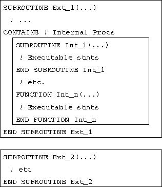

Syntax of a (non-recursive) subroutine declaration:
SUBROUTINEprocname
[ (
...
...
...
[ CONTAINS
END [ SUBROUTINE [
SUBROUTINE s may contain internal procedures but only if they themselves are not already internal.

Figure 8: Schematic Diagram of a Subroutine
The structure is similar to that of the main PROGRAM unit except a SUBROUTINE can be parameterised (with arguments) and the type and kind of these must be specified in the declarations section. A SUBROUTINE may include calls to other program units either internal, external or visible by USE association (defined in a module and USE d in the procedure. As with the main PROGRAM, the SUBROUTINE must terminate with an END statement and it is jolly good show to append SUBROUTINE and the name of the routine to this line as well.
In order to promote optimisation a recursive procedure must be
specified as such -- it must have the RECURSIVE keyword at the
beginning of the subroutine declaration (see Section  ).
).